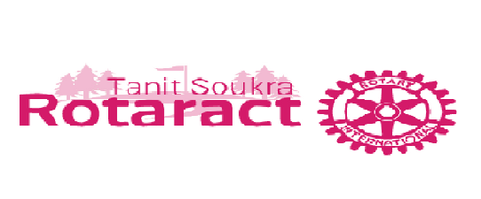

Expérience professionnelle
Stagiaire d'été
La société ABC « Audit and Business Consulting » est un cabinet d’expertise comptable
membre de l’Ordre des Experts Comptables de Tunisie crée en Octobre 1999. C’est une
société qui est constituée sous la forme juridique de SARL à responsabilité limitée de
droit tunisien.
Du 18 août au 23 septembre 2020, j’ai effectué ce stage qui avait pour objectif de découvrir l’entreprise et le
milieu du travail, découvrir un métier et responsabiliser l’étudiant face à la vie générale et au monde
professionnel en particulier.
En effet, les tâches assignées dans ce stage comprennent:
- Le saisie des opérations comptables dans le logiciel sage 100 comptablité
- Rapprochement bancaire
- Déclarations fiscales et sociales
- Fiche de paie des salariés dans le journal de paie avec le logiciel sage paie
Pour avoir plus d'informations, veuillez voir ce rapport de stage 2020.
Expérience de bénévolat
Rotaract Club

Rotaract Club Tanit Soukra, une organisation à but non lucratif a été fondé en 2018.
Il y a plusieurs de commissions:
- Commission Intérêt Public
- Commission Intérieure
- Commission Développement Personnel
- Commission Internationnal
- Commission Finance et Sponsoring
- Commission Communication
J'ai intégré ce monde l'année derniére en commançant avec être un membre du septembre 2019 jusqu'à Juillet 2020.
Cette mandant, je suis une Cheffe Commission Finance et Sponsoring du Juillet 2020 jusqu'à aujourd'hui (je
termine cette poste septembre 2021).
Pour plus d'informations, je vous invite à consulter ce site FaceBook du
Rotaract Club Tanit Soukra